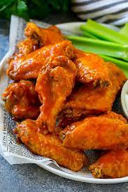

Buffalo Wings

Description:
These are some delicious wings that are made with frying oil. If you like spicy, this is the food for you!
Ingredients:
- 12 small chicken wings
- ¼ teaspoon seasoned salt, or to taste
- 1 cup all-purpose flour
- 1 teaspoon coarse salt
- ½ teaspoon ground black pepper
- ¼ teaspoon cayenne pepper
- ¼ teaspoon ground paprika
- 1 (12 fluid ounce) bottle Buffalo wing sauce (such as Frank's®), or to taste
- 2 quarts vegetable oil for frying
Steps:
- Season chicken wings lightly with seasoned salt.
- Mix together flour, salt, black pepper, cayenne pepper, and paprika in a wide, shallow bowl. Press wings into flour mixture to coat and arrange onto a large plate with space between. Refrigerate coated wings for 15 to 30 minutes.
- Dredge wings again in flour mixture and return to the plate. Refrigerate wings once more for 15 to 30 minutes.
- Heat oil in a deep-fryer or large saucepan to 375 degrees F (190 degrees C).
- Fry chicken wings in hot oil until crisp and juices run clear, 9 to 12 minutes. An instant-read thermometer inserted into the thickest part of the meat, near the bone, should read 165 degrees F (74 degrees C).
- Transfer fried wings to a large bowl. Drizzle sauce over wings and toss to coat.